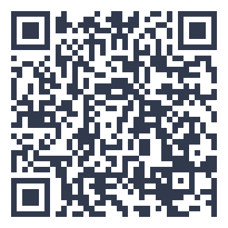

thuisitaliaans.com/esercizi/rifletti-su-un-dilemma-etico.html
Rifletti su un dilemma etico
Gira la ruota e rispondi a una domanda su un dilemma etico, a sorpresa.
📘 Riflettere su dilemmi etici
Discutere dilemmi etici è un ottimo esercizio per il lessico astratto e l'argomentazione avanzata.
Padroneggiare questo argomento ti aiuta a usare un italiano preciso e naturale anche in contesti complessi o formali. Questo esercizio allena il lessico legato alle persone e alla vita sociale, utile in moltissime conversazioni quotidiane.
Questo argomento fa parte del livello intermedio-avanzato del QCER, quello generalmente richiesto per studiare o lavorare in italiano con sicurezza.
Non preoccuparti di essere perfetto quando rispondi: l'obiettivo di questo esercizio è esprimerti con naturalezza e fluidità, anche accettando qualche imperfezione grammaticale.
I dilemmi etici stimolano un dibattito ricco e maturo
Un esercizio impegnativo, perfetto per un livello avanzato.
Prenota una lezione gratuitaVuoi allenarti anche fuori dal sito?
Con l'app Ti hai un percorso QCER completo dall'A1 al C2, edicola tematica, romanzi graduati e un dizionario in 14 lingue.
Scopri l'app Ti →📖 Approfondisci con il blog: cultura italiana

{kind=link}